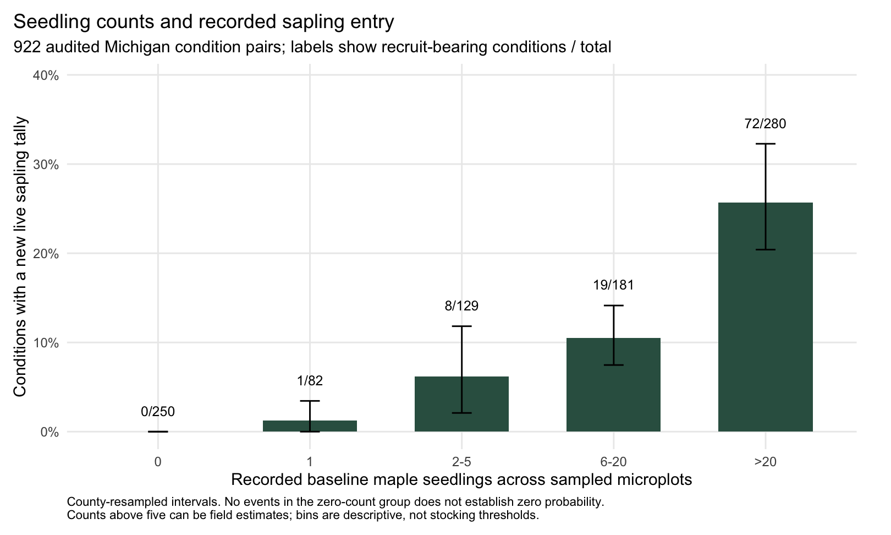

Canopy to Cohort
Do today’s maple seedlings signal tomorrow’s saplings?
A forest can contain many seedlings without those seedlings becoming the next generation of larger trees. This study compares repeated public USDA Forest Inventory and Analysis (FIA) observations in Michigan to ask what early maple counts tell us about new saplings recorded several years later.
922
paired forest-condition observations
903
physical plots in 66 Michigan counties
169
new live maple saplings recorded
100
forest conditions with at least one new sapling
A forest condition is a mapped part of a plot with similar forest characteristics. Each paired observation links that area across two visits, typically seven years apart. Here, a sapling is a tree with a trunk at least 1 inch but less than 5 inches in diameter at breast height. It is not a mature canopy tree.
Three findings to take away
More seedlings were a useful clue, not a guarantee
Conditions with higher starting counts more often had new maple saplings at the next visit. But even among the 280 conditions with more than 20 seedlings recorded initially, only 72 (25.7%) had a qualifying new sapling recorded later. Seedling abundance alone does not establish that the future forest is secure.

Adding more maple measurements did not clearly improve prediction
The study compared models on the same observations, testing each on counties excluded from its training data. Adding the abundance of existing maple saplings and larger maples produced small improvements in probability error, but the uncertainty included both improvement and worsening. These results do not yet show a dependable advantage over the simpler seedling-count model.
The models account for the area sampled and the time between visits. They are retrospective comparisons, not a validated tool for prescribing forest treatment.
Leaving the sapling size class does not always mean dying
A separate check followed 1,580 comparable, previously tagged maple saplings: 1,188 remained live saplings, 334 were recorded dead, and 58 remained alive after growing to at least 5 inches in trunk diameter. Keeping these outcomes separate prevents healthy growth from being mistaken for loss.
What this means for forest assessment
Seedling counts are worth measuring, but they are one part of the picture. Repeated visits help distinguish new sapling entry, continued survival, growth into a larger size class, and recorded death.
No new sapling recorded does not by itself mean regeneration has failed. The inventory samples small areas, seedlings are not individually tagged, and some entrants may die or grow beyond the studied size class between visits. These are unweighted results for the study sample, not statewide rates.
How the question developed
The earlier detection study examined whether seedlings were recorded at one visit and not at the next. That is a different question from whether young trees entered the sapling class. The new study audits repeated FIA visits and newly recorded stems to examine that transition directly. It does not claim to follow individual seedlings into individual saplings.
The research direction explains this progression. The full report places the analysis alongside existing FIA research and provides the statistical comparisons, uncertainty, and limitations. The maps and exploratory visuals preserve the county context, earlier size-class figures, and detection-pilot charts.
What remains to be tested
Two possible extensions are documented separately from the completed findings:
- Seedling length: a smaller measurement audit suggests a reason to test whether taller seedlings add information beyond counts. Only 14 conditions in that subset had new saplings, so no added-length prediction claim is made. See the measurement audit and follow-up study design.
- Deer and browsing: public sources have been assessed, but a suitable geographic match and exposure measure remain unresolved. No deer effect has been estimated in this study. See the source-feasibility assessment.
A survey-priority comparison also tests simple rules against the models. It does not establish fieldwork benefit or a treatment recommendation.
Inspect and reproduce
The project includes R code, aggregate evidence, automated checks, and explicit analysis decisions. After obtaining the pinned FIA snapshot and building the linked cohort, the main analysis runs with:
make recruitment-core
make test
make reportStart with the reproducibility guide, data dictionary, or research evidence. Source data and record-level predictions are not redistributed. This is a public research draft, not a peer-reviewed publication or an independently validated management tool.